固體的量子理論導論
第二章教會我們單個電子在各種位能下的行為。但在固體中，我們面對的不是一個電子，而是每立方公分約 $10^{22}$ 個原子、每個原子有多個電子的集體行為。本章將量子力學從「一個電子+一個原子」擴展到「海量電子+週期性晶格」，回答兩個核心問題：
① 在晶格的週期性位能中，電子的允許能量是什麼？→ 能帶理論
② 在熱平衡下，大量電子如何分布在各能態中？→ Fermi-Dirac 統計
2. Bloch 定理：$\psi(x)=u(x)e^{jkx}$——週期位能中波函數必為調幅平面波
3. Kronig-Penney 模型——1D 週期方阱→色散關係→允帶/禁帶的數學根源（$P$ 參數控制能隙寬度）
4. $E$–$k$ 圖：斜率 $dE/dk$ = 群速度，曲率 $d^2E/dk^2$=$1/m^*$——能帶邊緣可用拋物線近似 $E=\hbar^2k^2/(2m^*)$
5. 有效質量 $m^*=\hbar^2/(d^2E/dk^2)$——晶格對電子的全部影響被吸收進 $m^*$
6. Brillouin 區邊界 $k=\pm\pi/a$→Bragg 反射→駐波→能隙——波在週期結構中的干涉
7. 直接能隙（GaAs, 導帶底和價帶頂同在 $k=0$）vs 間接能隙（Si, $k$ 位置不同）→決定能否發光
8. 態密度 $g_c(E)=\frac{4\pi(2m^*)^{3/2}}{h^3}\sqrt{E-E_c}$——從 k 空間球殼計數推得，$\propto\sqrt{E}$
9. 有效態密度 $N_c=2(2\pi m^*kT/h^2)^{3/2}$——把整個導帶濃縮成一個等效態密度
10. Fermi-Dirac 分布 $f_F=1/[1+e^{(E-E_F)/kT}]$——$E_F$ 是佔據機率 50% 的能量；Boltzmann 近似用於 $E-E_F\gg kT$
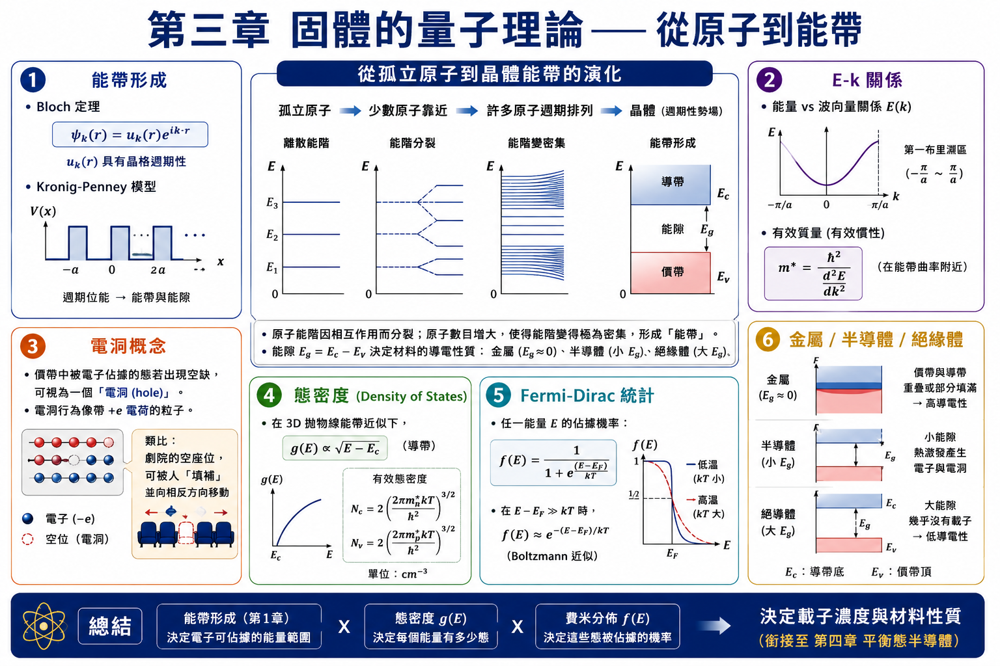
3.1.1 能帶的形成
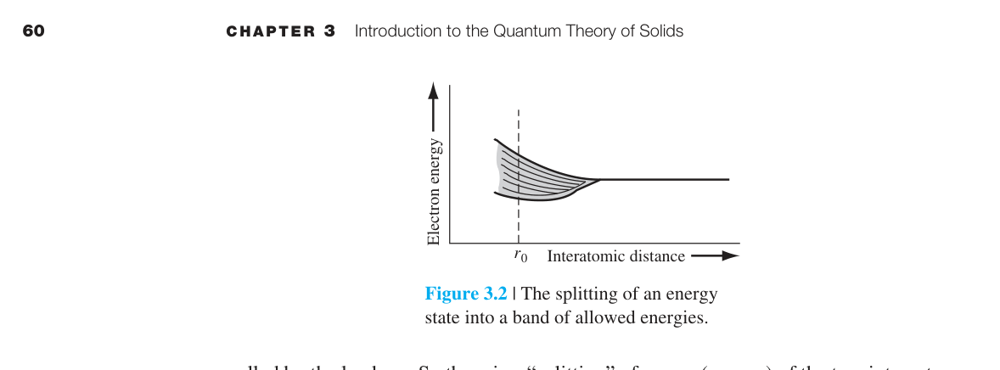
回顧第二章：單一孤立原子的電子有分立的能階（$E_n = -13.6/n^2$ eV）。現在想像把兩個原子慢慢靠近。當它們的波函數開始重疊時，電子之間產生交互作用→原來的一個能階分裂成兩個。這不是巧合——Pauli 原理要求每個電子有獨特的量子態，兩個電子不能佔據同一個態，所以能階必須分裂。
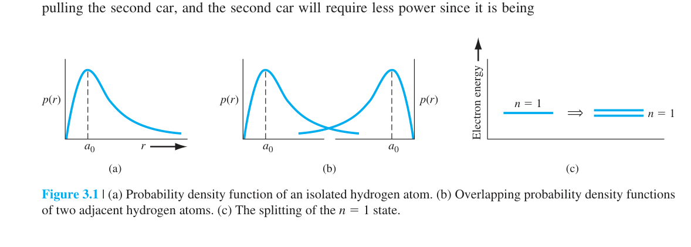
現在把這個圖像擴展到 $10^{22}$ 個原子（一個晶體）：每個原始能階分裂成含有極大量離散能階的能帶。在平衡原子間距處，能帶內相鄰能階的間距只有約 $10^{-19}$ eV——遠小於室溫下的 $kT$（0.026 eV）→實際可視為准連續的能量分布。
以矽為例（圖 3.4）：Si 原子有 4 個價電子（3s²3p²）。當原子形成晶體時，3s 和 3p 態交互作用→分裂成兩個能帶，每個能帶每原子有 4 個量子態。$T=0$ K 時，下方能帶（價帶）完全填滿，上方能帶（導帶）完全空著。兩者之間是禁帶（能隙 $E_g$）——沒有任何量子態存在。
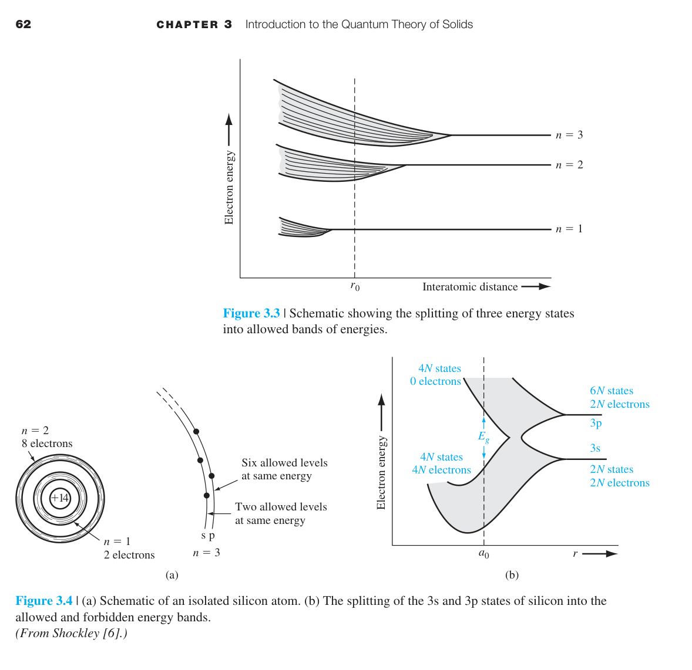
3.1.2 Kronig-Penney 模型
能帶的形成可以透過量子力學嚴格證明。Kronig-Penney 模型使用一維週期方阱位能來近似晶格（圖 3.6），然後求解薛丁格方程。
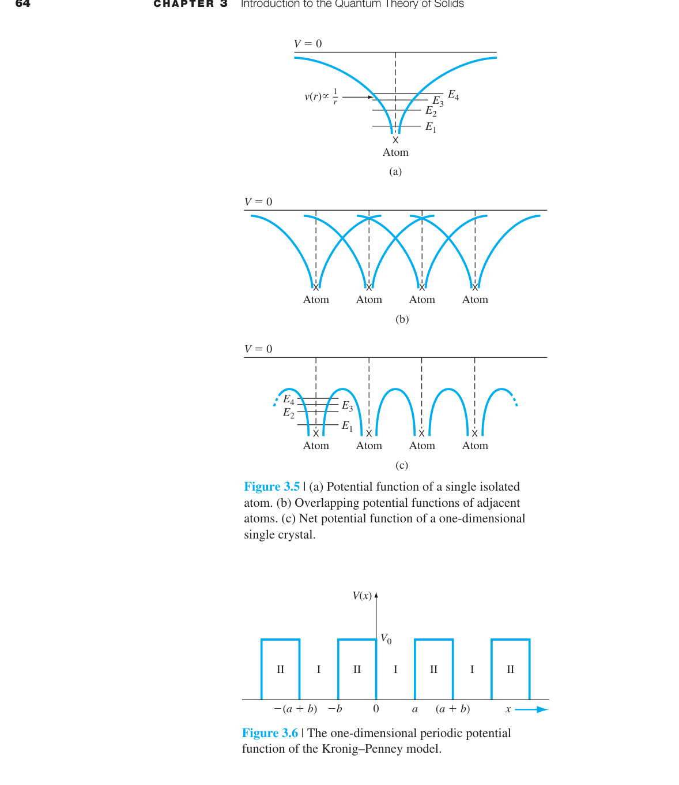
Bloch 定理是關鍵：在週期性位能中，波函數必須具有 $\psi(x) = u(x)e^{jkx}$ 的形式——一個平面波（$e^{jkx}$）乘以一個與晶格同週期的調制函數（$u(x)$）。
Kronig-Penney 推導步驟詳解
Kronig-Penney 模型的位能（圖 3.6）定義為：在區域 I（$0 < x < a$，阱區）$V(x)=0$；在區域 II（$-b < x < 0$，障壁區）$V(x)=V_0$。整個結構以週期 $(a+b)$ 重複——這是固體物理中最簡單的非平庸週期位能。
第一步：代入 Bloch 形式。將 $\psi(x)=u(x)e^{jkx}$ 代入一維、與時間無關的薛丁格方程： $$-\frac{\hbar^2}{2m}\frac{d^2\psi}{dx^2}+V(x)\psi=E\psi$$ 在區域 I（$V=0$），計算 $d^2\psi_1/dx^2 = e^{jkx}[d^2u_1/dx^2 + 2jk\,du_1/dx - k^2 u_1]$，代入後得到 $u_1(x)$ 的微分方程： $$\frac{d^2u_1}{dx^2}+2jk\frac{du_1}{dx}-(k^2-\alpha^2)u_1=0 \tag{3.4}$$ 其中 $\alpha^2 \equiv 2mE/\hbar^2$——$\alpha$ 與能量 $E$ 直接相關。在區域 II（$V=V_0$），同理得到 $u_2(x)$ 的方程： $$\frac{d^2u_2}{dx^2}+2jk\frac{du_2}{dx}-\left(k^2-\beta^2\right)u_2=0 \tag{3.8}$$ 其中 $\beta^2 \equiv 2m(E-V_0)/\hbar^2$。當 $E < V_0$（束縛態）時 $\beta$ 為虛數，但數學形式保持不變。
第二步：寫出通解。這兩個是常係數二階線性微分方程，其特徵方程為 $r^2+2jkr-(k^2-\alpha^2)=0$，解得 $r = -jk \pm j\alpha$。因此通解為平面波的疊加：
四個未知係數 $A,B,C,D$ 待定——這正是「四個未知數」的由來。
第三步：施加邊界條件——四個方程決定四個未知數。因為位能處處有限，波函數 $\psi(x)$ 及其一階導數必須處處連續。這給出四個邊界條件：
- $x=0$ 處波函數連續：$u_1(0)=u_2(0)$ → $A+B-C-D=0$（方程一，(3.12)式）
- $x=0$ 處導數連續：$du_1/dx|_{x=0}=du_2/dx|_{x=0}$ → $(\alpha-k)A-(\alpha+k)B-(\beta-k)C+(\beta+k)D=0$（方程二，(3.14)式）
- $x=a$ 對應 $x=-b$（週期性）：$u_1(a)=u_2(-b)$ → $Ae^{j(\alpha-k)a}+Be^{-j(\alpha+k)a}-Ce^{-j(\beta-k)b}-De^{j(\beta+k)b}=0$（方程三，(3.16)式）
- $x=a$ 對應 $x=-b$ 處導數連續：$du_1/dx|_{x=a}=du_2/dx|_{x=-b}$ → 第四個方程（(3.18)式），結構與方程三類似但係數多了 $(\alpha\pm k)$ 和 $(\beta\pm k)$ 因子
這構成了一個 $4\times4$ 齊次線性方程組 $\mathbf{M}\cdot[A,B,C,D]^T=0$。有非零解的充要條件是係數行列式為零：$\det(\mathbf{M})=0$。計算這個行列式極其繁複（這就是為什麼課本說「extremely laborious」），但結果極其優美——
經過繁複的邊界條件匹配（四個方程、四個未知係數），得到決定性的色散關係：
物理意義——為什麼會出現能帶和能隙？右邊 $\cos k(a+b)$ 必須在 $[-1,1]$ 範圍內（因為實數 $k$ 的餘弦值域為 $[-1,1]$）。這限制了左邊 $\alpha$ 和 $\beta$ 的取值範圍（$\alpha^2=2mE/\hbar^2$，與能量 $E$ 直接相關）→只有特定的 $E$ 值能使左邊表達式也落在 $[-1,1]$ 內→這些 $E$ 構成允帶；其餘 $E$ 值對應左邊 $>1$ 或 $<-1$→無解→禁帶。週期性晶格自然導致能帶結構——這不是假設，是薛丁格方程施加於週期邊界條件的直接後果。
化簡為 $P$ 參數形式：為了得到更易分析物理內涵的結果，取極限 $b\to 0$、$V_0\to\infty$，但保持乘積 $bV_0$ 有限（即障壁變窄變高，但「總強度」不變）。在 $\beta\to j\gamma$（$\gamma$ 為實數，對應 $E 其中 $P$ 參數定義為： $P$ 的因次為無因次量——它綜合了位能障壁高度（$V_0$）、障壁寬度（$b$）、晶格常數（$a$）和電子質量（$m$），是 Kronig-Penney 模型中唯一的物理參數。整個能帶結構只依賴這一個數字。 $P$ 參數的物理意義——兩個極限： 數值範例——能隙如何隨 $P$ 打開：考慮 $P=3$ 的具體情況。定義左邊函數 $f(\alpha a)=3\sin(\alpha a)/(\alpha a)+\cos(\alpha a)$。$f(\alpha a)$ 必須落在 $[-1,1]$ 內（因為等於 $\cos ka$）。計算幾個關鍵點：$\alpha a \to 0$ 時，$\sin x/x \to 1$→$f(0)=3\cdot1+1=4>1$→不允許（第一個允帶不是從 $\alpha a=0$ 開始，而是從 $f(\alpha a)=1$ 的第一個解開始）。$\alpha a=\pi$ 時，$\sin\pi=0$→$f(\pi)=0+(-1)=-1$→在邊界上，允帶結束。$\alpha a=2\pi$ 時，$f(2\pi)=0+1=1$→在邊界上，第二個允帶結束。$\alpha a=1.5\pi$ 時，$f(1.5\pi)\approx 3(-1)/(1.5\pi)+0\approx -0.64$→在 $[-1,1]$ 內→允帶。但 $\alpha a=1.2\pi$ 時，$f$ 可能超出範圍。繪製 $f(\alpha a)$ 曲線（課本圖 3.8c）顯示：$f$ 在每個 $\alpha a=n\pi$ 附近劇烈振盪，超出 $[-1,1]$ 的部分對應能隙。$P$ 越大→$f$ 的振幅越大→超出 $[-1,1]$ 的 $\alpha a$ 範圍越寬→能隙越寬。$P=0$→$f=\cos\alpha a$（振幅 $1$）→所有 $\alpha a$ 都在 $[-1,1]$ 內→能隙為零。這就是能隙從 $P$ 參數「長出來」的數學圖像。 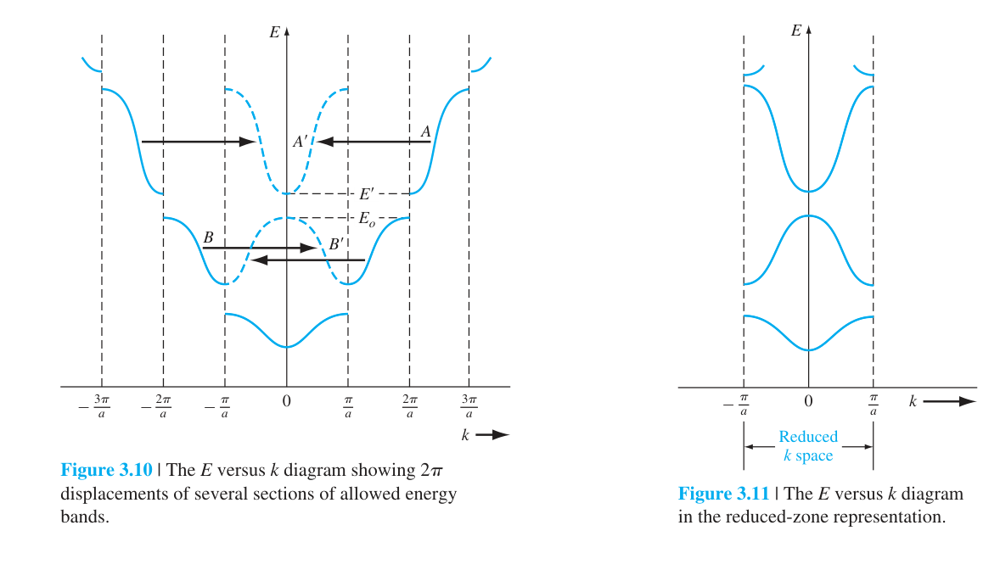 由 Kronig-Penney 模型可繪製 $E$ 對 $k$ 的關係圖。$k$ 的範圍（第一 Brillouin 區）為 $-\pi/a \leq k \leq \pi/a$。在每個 Brillouin 區邊界處，$E$–$k$ 曲線不連續→能隙。 Brillouin 區的物理意義：$k = \pm\pi/a$ 代表什麼？當 $k = \pi/a$ 時，de Broglie 波長 $\lambda = 2\pi/k = 2a$——正好是晶格常數的兩倍。這個波長的波在晶格中產生 Bragg 反射（相鄰原子散射的波相位差 = $\pi$→完全破壞性干涉）。波無法在晶體中傳播→形成駐波→能隙出現。所以能隙不是來自某個神秘的量子效應，而是來自波在週期結構中的 Bragg 反射——這與 X 射線在晶體中的繞射完全相同的物理。 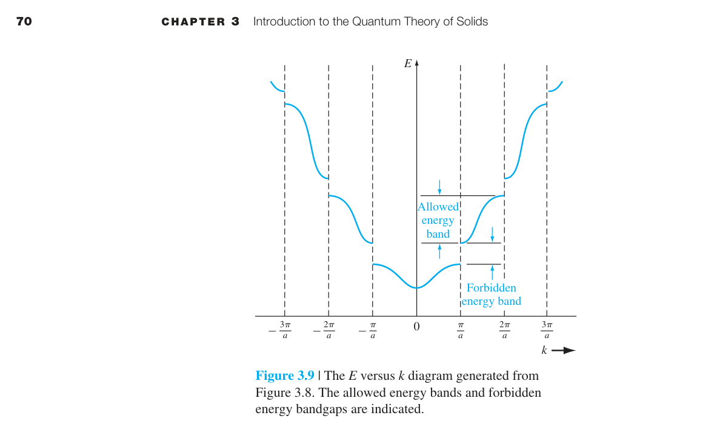 如何讀 $E$–$k$ 圖： 在能帶邊緣附近（導帶底部或價帶頂部），$E$–$k$ 關係可以用拋物線近似： 這和自由電子的 $E=\hbar^2k^2/2m$ 形式完全相同——只是用有效質量 $m^*$取代了自由電子質量 $m_0$。晶格的影響全部被吸收進了 $m^*$。 現在把電場加在晶體上。電子受到 $F=-e\mathcal{E}$ 的力。如果導帶中有空的量子態（電子可以移動到更高能的態），電子就會加速→產生漂移電流。 關鍵公式：漂移速度 $v_d = \mu\mathcal{E}$（$\mu$ = 遷移率），電流密度 $J = -env_d$。結合起來： 物理圖像：導電率 $\sigma$ 取決於兩個因素——有多少載子（$n$）以及它們跑多快（$\mu$）。金屬的 $n$ 極大→高導電率。半導體的 $n$ 可透過摻雜調控→導電率可控。遷移率 $\mu = e\tau/m^*$ 取決於有效質量（晶格結構決定）和散射時間 $\tau$（缺陷和聲子決定）。 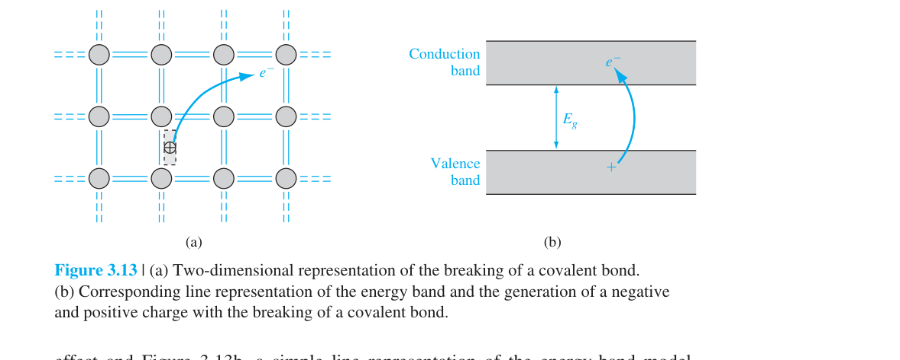 這可能是第三章最優雅的概念。電子在真空中的運動遵守 $F=m_0a$。在晶體中呢？ 電子的群速度：$v_g = \frac{1}{\hbar}\frac{dE}{dk}$（波包的移動速度）。施加外力 $F$ 時 $F = dp/dt = \hbar\,dk/dt$。加速度： 與 $F=m^*a$ 比較→ 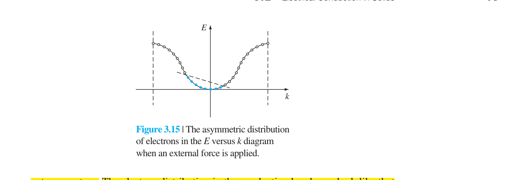 價帶中一個空的量子態 = 電洞（hole）。電洞的行為等效於一個帶 $+e$ 電荷、有正有效質量 $m_p^*$ 的粒子。用電洞取代對數十億個價帶電子的描述，是半導體物理最強大的簡化之一。 為什麼「缺失的電子」像正電荷？想像一個坐滿人的劇院（= 滿價帶），每個座位代表一個量子態。如果中間有一個空座位，旁邊的人可以移到空座位上→空座位向反方向移動。要追蹤所有人的移動很困難，但追蹤「空座位的移動」很簡單——空座位看起來像一個帶正電的粒子在移動。數學上：$N$ 個電子的總電流 = $-e\sum v_i$。如果其中一個態是空的，總電流改變了 $+ev_k$——等效於一個帶 $+e$ 的粒子以速度 $v_k$ 運動。 電洞的有效質量：價帶頂附近的 $E$-$k$ 曲線向下彎（$d^2E/dk^2 < 0$）→$m^* = \hbar^2/(d^2E/dk^2)$ 為負值。但我們定義電洞的有效質量為正：$m_p^* = -m^*$（取絕對值）。電洞的能量方向也反轉——電洞「向上」移動代表能量增加（電子向下填充低能態）。 材料的導電性完全由能帶填充情況決定： 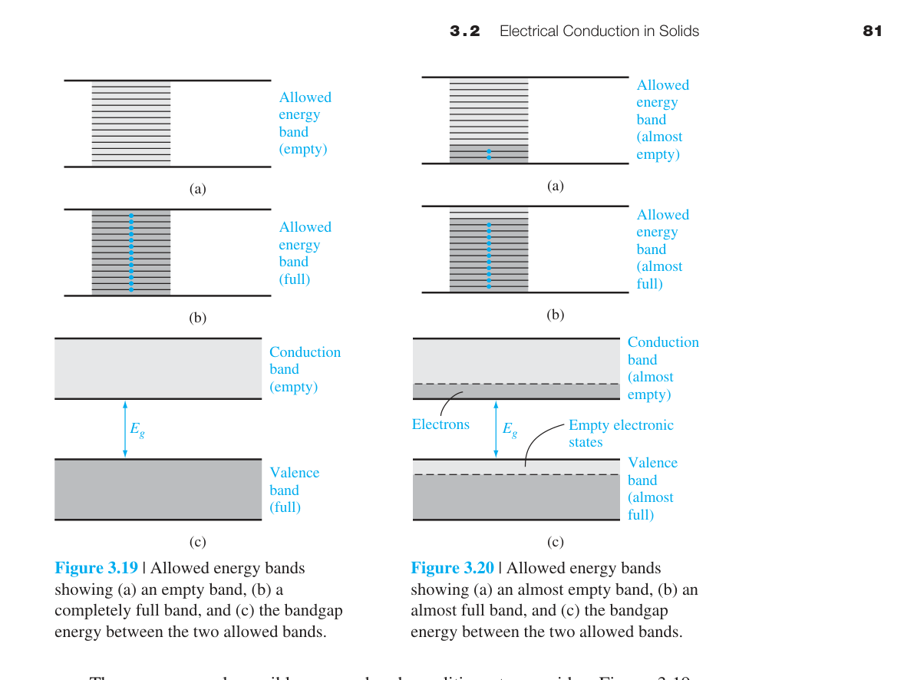 真實晶體是三維的，$E$–$\mathbf{k}$ 關係更複雜： Si（間接能隙，$E_g=1.12$ eV）：導帶最小值不在 $k=0$，而是在 $\langle100\rangle$ 方向的六個等效點。電子從價帶頂（$k=0$）跳到導帶底需要改變動量→必須有聲子參與→躍遷機率低→Si 不適合做發光元件。 GaAs（直接能隙，$E_g=1.42$ eV）：導帶底和價帶頂都在 $k=0$（Γ 點）。電子可以「垂直」躍遷（動量守恆不需要聲子）→高發光效率→LED、雷射的理想材料。 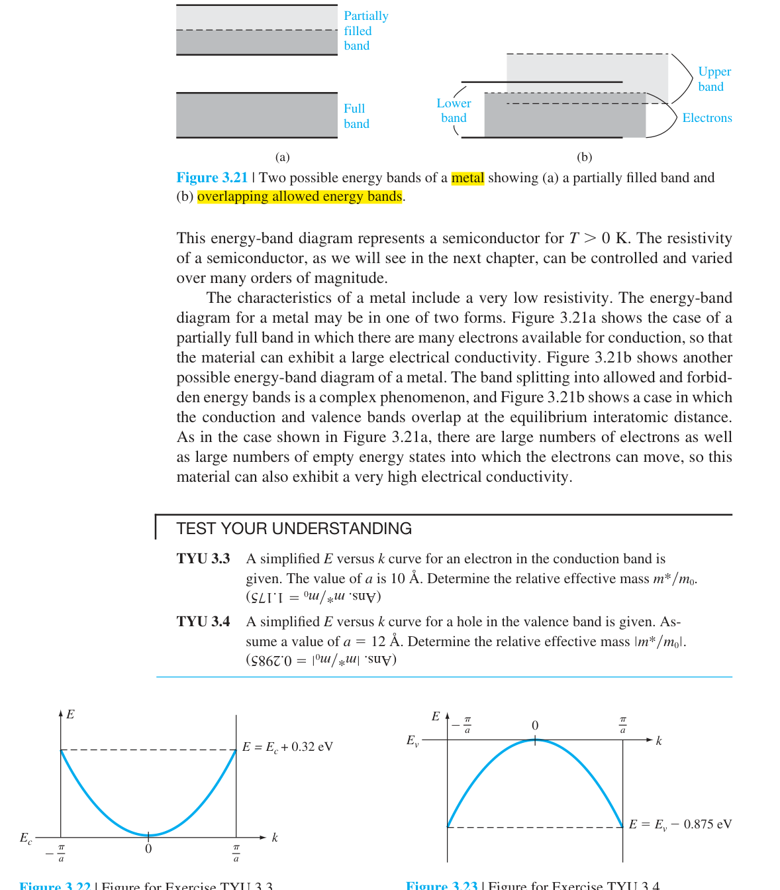 在 3.2.3 節我們定義了基本的電導率有效質量 $m^* = \hbar^2/(d^2E/dk^2)$。但在三維晶體中，導帶底和價帶頂附近的等能面通常是橢球形（不是球形），不同方向的有效質量不同。這引出了幾種重要的「組合」有效質量： 態密度有效質量（Density-of-States Effective Mass）$m_n^*$：出現在態密度公式 $g_c(E)$ 中的組合量。對於有多個等效能谷的材料（如 Si 的六個橢球）， 其中 $m_l$ 是縱向有效質量，$m_t$ 是橫向有效質量。Si 的 $m_n^* = 1.08\,m_0$，GaAs 只有一個球形能谷所以 $m_n^* = 0.067\,m_0$。 電導率有效質量（Conductivity Effective Mass）$m_c^*$：出現在遷移率公式 $\mu = e\tau/m_c^*$ 中的組合量： 這是三個方向的平均值（一個縱向 + 兩個橫向）。Si 的 $m_c^* = 0.26\,m_0$。 知道了允帶的能量範圍，下一步問題是：在能量 $E$ 附近，每單位能量、每單位體積有多少個量子態？——這就是態密度 $g(E)$。 推導從 $k$ 空間計數開始： 步驟一：k 空間中的態密度。3D 無限位能井中，$k_x=n_x\pi/a$，$k_y=n_y\pi/a$，$k_z=n_z\pi/a$。每個量子態在 $k$ 空間佔體積 $(\pi/a)^3 = \pi^3/V$（$V=a^3$ 是晶體體積）。考慮自旋簡併（每個 $(k_x,k_y,k_z)$ 可容納兩個電子：自旋↑和↓），$k$ 空間態密度 $= 2V/\pi^3$。 步驟二：球殼計數。在 $k$ 空間中，能量 $E$ 以下的所有態佔據一個半徑為 $k = \sqrt{2m^*E}/\hbar$ 的球。在 $k$ 到 $k+dk$ 的球殼中的態數： 其中用了 $k=p/\hbar$，$dk=dp/\hbar$。 步驟三：轉換到能量空間。$E = p^2/(2m^*)$→$p = \sqrt{2m^*E}$→$dp = \sqrt{m^*/2E}\,dE$。代入得每單位能量的態數 $g(E)$。再除以體積 $V$ 得到單位體積的態密度： 上面的三步驟摘要涵蓋了推導的主軸，但要真正掌握態密度概念，必須理解每一步的代數細節。以下是從「電子在晶體盒子裡」到「$g_c(E)\propto\sqrt{E-E_c}$」的完整推導，每步都展開。 第〇步：物理模型——三維無限位能井。把半導體晶體建模為邊長 $a$ 的立方體盒子（體積 $V=a^3$），電子被限制在盒子內但可在其中自由運動。位能：$V(x,y,z)=0$（盒子內），$V=\infty$（盒子外）。三維薛丁格方程：
$$-\frac{\hbar^2}{2m}\left(\frac{\partial^2}{\partial x^2}+\frac{\partial^2}{\partial y^2}+\frac{\partial^2}{\partial z^2}\right)\psi(x,y,z)=E\psi(x,y,z)$$
用分離變數法 $\psi(x,y,z)=X(x)Y(y)Z(z)$ 求解（與第二章一維無限位能井的推導完全平行），得到駐波解。邊界條件 $\psi=0$ 在盒子壁面→波數被量子化：
$$k_x=n_x\frac{\pi}{a},\quad k_y=n_y\frac{\pi}{a},\quad k_z=n_z\frac{\pi}{a} \quad (n_x,n_y,n_z=1,2,3,\ldots) \tag{3.60}$$
注意只有正整數給出獨立的量子態（負整數只改變波函數的符號，不改變 $|\psi|^2$ 和能量——負的 $n_x$ 不是一個新態）。 第一步：k 空間中每個量子態佔據的體積。在 $(k_x,k_y,k_z)$ 坐標系中，相鄰量子態的 $k_x$ 間距為：
$$\Delta k_x = (n_x+1)\frac{\pi}{a} - n_x\frac{\pi}{a} = \frac{\pi}{a} \tag{3.61}$$
同理 $\Delta k_y=\Delta k_z=\pi/a$。因此每個量子態在 k 空間中佔據的體積為：
$$V_k^{\text{(per state)}} = \left(\frac{\pi}{a}\right)^3 = \frac{\pi^3}{V} \tag{3.62}$$
這意味著 k 空間中每單位體積有 $V/\pi^3$ 個量子態——k 空間態密度。 第二步：自旋簡併與正卦限約化。每個 $(k_x,k_y,k_z)$ 點可以容納兩個電子（自旋向上 $\uparrow$ 和自旋向下 $\downarrow$，Pauli 原理允許因為自旋量子數不同）→引入因子 $2$。此外，$k_x$, $k_y$, $k_z$ 取負值給出相同的能量和量子態（不增加新態），所以我們只考慮 k 空間中正卦限（第一卦限：$k_x,k_y,k_z>0$），即完整球體的 $1/8$→引入因子 $1/8$。這是課本圖 3.26(b) 只畫正八分之一球的物理原因。 第三步：球殼中的量子態總數 $g_T(k)dk$。在 k 空間中，半徑為 $k$、厚度為 $dk$ 的球殼的體積為 $4\pi k^2 dk$。這個球殼中（正卦限內，計入自旋）的量子態總數為：
$$g_T(k)\,dk = \underbrace{2}_{\text{自旋}} \times \underbrace{\frac{1}{8}}_{\text{正卦限}} \times \frac{4\pi k^2\,dk}{\pi^3/V} = \frac{V k^2\,dk}{\pi^2} \tag{3.64}$$
分拆理解：分子 $V k^2 dk$ 反映「盒子越大→態越多，球殼越大→態越多」；分母 $\pi^2$ 是量子力學的自然單位。$g_T(k)$ 的物理意義是「波數在 $k$ 到 $k+dk$ 之間的量子態總數」。 第四步：從 k 空間轉換到能量空間——核心代數。關鍵在於 $E$ 和 $k$ 的函數關係。對於導帶底部的電子（拋物線近似，以有效質量 $m_n^*$ 取代自由電子質量 $m$）：
$$E-E_c = \frac{\hbar^2 k^2}{2m_n^*} \tag{3.71}$$
由此解出 $k$ 和 $k^2$：
$$k = \frac{\sqrt{2m_n^*(E-E_c)}}{\hbar}, \qquad k^2 = \frac{2m_n^*(E-E_c)}{\hbar^2}$$
微分 $k$ 對 $E$ 的關係，得到 $dk$（這是轉換的關鍵——$dk$ 不是常數，而是隨 $E$ 變化的）：
$$dk = \frac{1}{\hbar}\sqrt{\frac{m_n^*}{2(E-E_c)}}\,dE \tag{3.66}$$
現在把 $k^2$ 和 $dk$ 代入 (3.64) 式：
$$g_T(E)\,dE = \frac{V}{\pi^2} \cdot \left[\frac{2m_n^*(E-E_c)}{\hbar^2}\right] \cdot \left[\frac{1}{\hbar}\sqrt{\frac{m_n^*}{2(E-E_c)}}\,dE\right]$$
逐步化簡——合併常數和 $E$ 項：
\begin{align*}
g_T(E)\,dE &= \frac{V}{\pi^2} \cdot \frac{2m_n^*}{\hbar^2} \cdot \frac{1}{\hbar} \cdot \sqrt{\frac{m_n^*}{2}} \cdot \frac{E-E_c}{\sqrt{E-E_c}}\,dE \\
&= \frac{V}{\pi^2} \cdot \frac{2m_n^* \cdot m_n^{*1/2}}{\sqrt{2}\,\hbar^3} \cdot \sqrt{E-E_c}\,dE \\
&= \frac{V}{\pi^2} \cdot \frac{(2m_n^*)^{3/2}}{2\hbar^3} \cdot \sqrt{E-E_c}\,dE \\
&= \frac{V(2m_n^*)^{3/2}}{2\pi^2\hbar^3}\sqrt{E-E_c}\,dE
\end{align*}
注意 $E-E_c$ 除以 $\sqrt{E-E_c}$ 正好得到 $\sqrt{E-E_c}$——這是 $\sqrt{E}$ 依賴關係的數學根源。 第五步：除以體積，以 $h$ 表示——得到最終形式。$g_T(E)$ 是整個晶體（體積 $V$）中的態數。除以 $V$ 得到單位體積態密度，這是半導體物理的標準定義。再使用 $\hbar = h/(2\pi)$→$\hbar^3 = h^3/(8\pi^3)$→$\pi^2\hbar^3 = \pi^2 h^3/(8\pi^3) = h^3/(8\pi)$。代入：
$$g_c(E) = \frac{g_T(E)}{V} = \frac{(2m_n^*)^{3/2}}{2\pi^2\hbar^3}\sqrt{E-E_c} = \frac{(2m_n^*)^{3/2}}{2\pi^2}\cdot\frac{8\pi}{h^3}\sqrt{E-E_c}$$
$$= \frac{8\pi(2m_n^*)^{3/2}}{2\pi^2 h^3}\sqrt{E-E_c} = \frac{4\pi(2m_n^*)^{3/2}}{h^3}\sqrt{E-E_c}$$
$$\boxed{g_c(E) = \frac{4\pi(2m_n^*)^{3/2}}{h^3}\sqrt{E-E_c}} \quad (E \geq E_c) \tag{3.72}$$
這就是課本的 (3.72) 式。每個因子都有明確的物理來源：$4\pi$ 來自球殼面積 $4\pi k^2$（三維幾何），$(2m_n^*)^{3/2}$ 來自能量-動量關係的轉換（材料特性），$h^3$ 是量子力學的相空間基本體積（每個量子態在相空間中佔據 $h^3$），$\sqrt{E-E_c}$ 反映「離能帶邊緣越遠，k 空間球越大→球殼面積越大→態越多」。 這個 $\sqrt{E}$ 依賴關係在第四章計算電子濃度 $n_0 = \int_{E_c}^{\infty} g_c(E)f_F(E)dE$ 時至關重要——積分 $\int_0^{\infty} \sqrt{x}\,e^{-x}\,dx = \sqrt{\pi}/2$（Gamma 函數 $\Gamma(3/2)$）就是 $N_c$ 公式中 $(kT)^{3/2}$ 因子的直接來源。 態密度 $g_c(E)$ 和 $g_v(E)$ 是能量的函數。但在半導體物理中，我們常需要一個「簡化」的數字來描述整個導帶（或價帶）的態密度總量。這就是有效態密度 $N_c$ 和 $N_v$。 概念：把導帶中所有量子態「集中」到導帶邊緣 $E_c$ 一個等效能量上。數學上，$N_c$ 定義為： 在室溫（$T=300$ K）下：Si 的 $N_c = 2.8\times10^{19}$ cm$^{-3}$，$N_v = 1.04\times10^{19}$ cm$^{-3}$。GaAs 的 $N_c = 4.7\times10^{17}$ cm$^{-3}$（因為 $m_n^*$ 很小）。 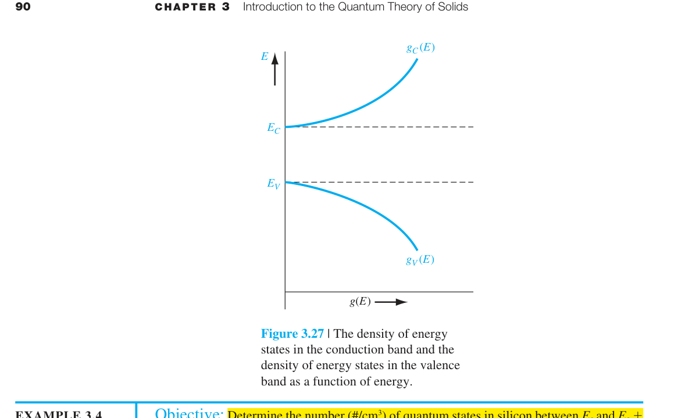 態密度告訴我們有多少「座位」。現在需要知道這些座位被佔據的機率。電子是Fermi 子（自旋 1/2），服從 Pauli 原理→佔據機率由 Fermi-Dirac 函數給出： $E_F$ = Fermi 能階——系統的電化學勢。在 $T=0$ K：$f_F=1$（$E $E_F$ 在不同材料中的位置： 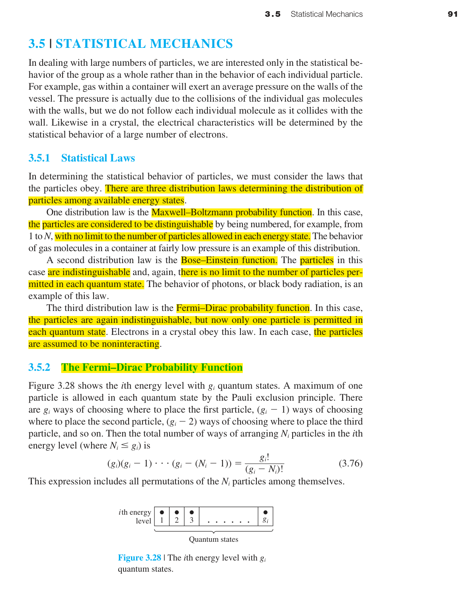 Boltzmann 近似：當 $E-E_F \gg kT$（半導體的典型情況，$E_F$ 在能隙中）， 這大大簡化了積分→第四章的所有公式（$n_0$, $p_0$, $n_i$）都是基於這個近似。 $m^*=\hbar^2/(d^2E/dk^2)$ 為負，使電子加速度方向反常；以正電荷、正有效質量的電洞描述滿價帶中的少數空態更直接。 不能。它是局部二階 Taylor 展開；遠離極值時非拋物性明顯，$m^*$ 會依能量與方向改變。 完成上方診斷後，請在不查公式的情況下重建代表推導，並改變一個參數檢查極限行為。更多含數值與解答的題目：本章完整習題頁。
3.1.3 k 空間圖與能帶結構
3.2.1–3.2.2 電傳導與漂移電流
3.2.3 電子有效質量 ⭐
導帶底部 $d^2E/dk^2>0$→$m^*>0$——電子正常加速。
價帶頂部 $d^2E/dk^2<0$→$m^*<0$——電子對電場的反應與正電荷相同！這就是電洞（hole）概念的來源：與其追蹤價帶中數十億個電子的複雜集體運動，不如把它們等效為少數幾個帶正電、有正有效質量的「電洞」。
GaAs 的 $m^*=0.067m_0$——電子在 GaAs 中「感覺」比在真空中輕 15 倍。Si 的 $m^*=0.98m_0$——重了近 15 倍。這就是為什麼 GaAs 元件比 Si 元件快（高頻應用偏好 GaAs）。3.2.4–3.2.5 電洞·金屬/絕緣體/半導體
類型 能帶結構 $E_g$ 室溫電阻率 金屬 能帶部分填充或重疊 0 ∼10⁻⁶ Ω·cm 半導體 滿價帶+空導帶，$E_g$ 適中 0.5–2 eV 10⁻³–10⁹ 絕緣體 滿價帶+空導帶，$E_g$ 很大 >3–5 eV >10¹² 3.3 三維延伸：Si 與 GaAs
3.3.2 額外有效質量概念
3.4 態密度函數 ⭐
3.4.1 態密度的數學推導
3.4.2 態密度的完整推導——從 $k$ 空間到 $g(E)$ 的每一步代數
維度 等能面形狀 態密度 $g(E)$ 物理來源 1D 兩個點（$\pm k$） $g_{1D}(E) \propto \dfrac{1}{\sqrt{E}}$ 等能「面」為零維→$dk$ 項主導 2D 圓周（$2\pi k$） $g_{2D}(E) \propto \text{const}$ 圓周長 $\propto k$，$dk\propto 1/k$→相乘為常數 3D 球面（$4\pi k^2$） $g_{3D}(E) \propto \sqrt{E}$ 球面積 $\propto k^2$，$dk\propto 1/k$→相乘 $\propto k\propto\sqrt{E}$ 3.4.3 延伸到半導體：有效態密度
3.5 統計力學：Fermi-Dirac 分布 ⭐
材料 $E_F$ 位置 物理意義 金屬 在能帶內部 $f_F(E_F) = 0.5$，附近有大量可用態→高導電性 本徵半導體 能隙正中央（近似） $E_{Fi} \approx (E_c+E_v)/2 + (3/4)kT\ln(m_p^*/m_n^*)$ n 型半導體 靠近 $E_c$ $E_F$ 上移→$f_F(E_c)$ 增大→導帶電子增多 p 型半導體 靠近 $E_v$ $E_F$ 下移→價帶空態增多→電洞增多 簡併半導體 進入導帶或價帶 $E_F$ 在能帶內→行為接近金屬 本章摘要
推導、假設與章末診斷
方程式使用契約
中間推導：三維態密度
章末練習與概念診斷
能帶曲率為負時，為何改用電洞描述？
有效質量公式能否用在整條能帶？
延伸計算練習